Principal Investigator
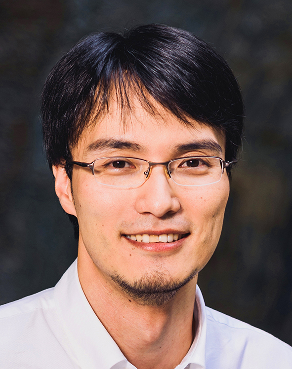
GOKI EDA
ASSISTANT PROFESSORDr. Eda received his M.Sc. in Materials Science and Engineering from Worcester Polytechnic Institute in 2006 and Ph.D. in the same discipline from Rutgers University in 2009. He became a Newton International Fellow of the Royal Society of the UK and worked at Imperial College London. Dr. Eda joined the National University of Singapore as an Assistant Professor of Physics and Chemistry, and a member of the Centre for Advanced 2D Materials in 2011. He is a recipient of the Singapore National Research Foundation (NRF) Research Fellowship and many awards including the Singapore National Academy of Science (SNAS) Young Scientist Award, University Young Researcher Award, and IPS Omicron Nanotechnology Award. He is an Associate Editor of npj 2D Materials and Applications.
Postdoctoral Researchers
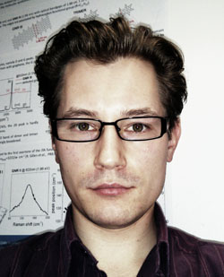
IVAN VERZHBITSKIY
Dr. Ivan Verzhbitskiy received his B.Sc. and M.Sc. in Physics from St. Petersburg State University, Russia. He completed his PhD in 2011 in the group of Prof. M. Chrysos at the University of Angers, France. Later, Dr. Verzhbitskiy was offered a Postdoctoral Associate position in the group of Dr. C. Casiraghi at the Free University Berlin. His research was focused on spectroscopic studying of electronic and optical properties of low-dimensional carbon materials, like graphene, carbon nanotubes or graphene nanoribbons. He joined Prof. Eda’s Research Lab in November 2013.
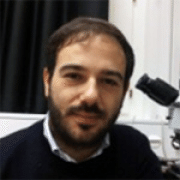
DANIELE VELLA
Ph.D. Students
RAJEEV KUMAR
Rajeev received a M.Sc. in Physics from Sri Sathya Sai Institute of Higher Learning, Puttaparthi, India in 2011. He joined Prof. Eda's Research Group in Aug 2013.
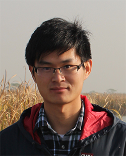
JUNYONG WANG
Junyong received his Master's degree in Condensed Matter Physics in 2014 from College of Physics, Nanjing University, Nanjing, China. He joined Prof. Eda's Research group in Sep 2014. Now he is interested in excitons related electronic and optical properties in 2D materials.
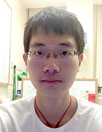
ZHANG QI
I received my B.Sc. in Material Science in 2014 from Soochow University. I joined Prof Eda's group in Jan 2015. My research focuses on exciton properties of perovskites crystals. I have a great interest in physics and mathematics. I love keeping on learning new things. Meanwhile, table tennis, reading, and poker enrich my extra free time.

ERIC LINARDY
Eric received his B.Eng(Hons) degree in Materials Science and Engineering in 2013 from National University of Singapore, Singapore. He joined Nanomaterials and Devices Group as a graduate student in January 2016. . His research focus is on the growth of large-area Transition Metal Dichalcogenide and investigation of their electronic properties.
Visitors
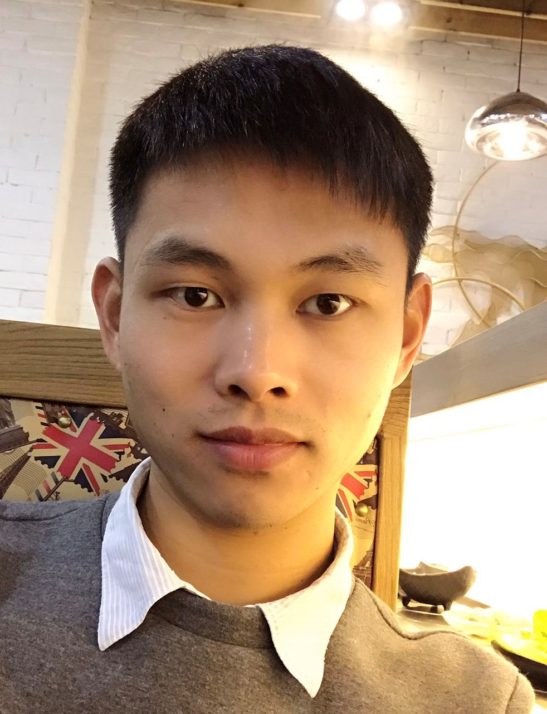
BIAN GANG
Bian Gang currently works as a Ph.D. candidate in Prof. Jiang Pingping's lab at Jiangnan University, Wuxi, China. His research has been focusing on the design of graphene oxide composite in catalytic reactions. His recent research interest focuses on the optical properties derived from graphene composite.

JENNA HOLLAND
Jenna is an undergraduate student at Rutgers University majoring in Materials Science and Engineering with a concentration in Biomaterials and a minor in Biological Sciences. For the past year, she has been working in the Keck Center for Collaborative Neuroscience focusing on neuronal genesis in the inner ear. Her research project in Eda Lab focuses on colloidal lithography.
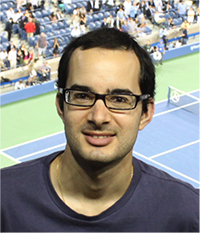
DAMIEN VOIRY
Damien works as a postdoctoral associate in the group of Prof. Chhowalla at Rutgers University, USA since 2011. His research focuses on the phase engineering of Transition Metal Dichalcogenides.

JIANG PU
Jiang received his M.Sc. degree in applied physics in 2014 from Waseda University, Tokyo, Japan. He is currently a Ph.D. candidate in the department of Advanced Science and Engineering at Waseda University. He is working on device applications of organic and low-dimensional materials in Prof. Takenobu Lab. His recent research interests focus on investing electronic properties and exploring device functionalities of Transition Metal Dichalcogenides.
YOHEI ISHIDA
Yohei received his Ph.D. of Engineering under the supervision of Prof. Shinsuke Takagi at Tokyo Metropolitan University in Mar 2013. His research interests focus on the utilization of sunlight for energy conversion toward artificial photosynthesis, supramolecular assembly of two-dimensional materials and functional molecules, and metal nano-particles and nano-clusters.He will start his academic career as an assistant professor from Apr 2014 at division of Materials Science and Engineering, Hokkaido University, Japan.
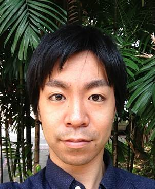
DAICHI KOZAWA
Daichi received his Bachelor of Engineering Degree in 2010 from Doshisha University, Kyoto, Japan. He completed his Master Degree in Energy Science in 2012 from Kyoto University, Kyoto, Japan. He has been working on optical properties of nano carbon materials in Prof. Matsuda’s group since October 2011.

LAURIE KING
Laurie completed her MChem at the University of Durham, UK and has recently submitted her Ph.D. thesis at Imperial College London. The focus of her thesis was semiconductor (such as cadmium selenide quantum dots and molybdenum disulfide nanosheets) sensitized solar cells and she has a particular interest in photocurrent measurements.
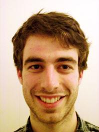
JOACHIM DIAS
I will be starting a MASt course in the department of materials in Cambridge in October 2012 with a major focus on graphene growth and characterisation. I've been working in research on microfluidics in the CNRS lab for photonics and nanostructures under the supervision of Andre Estevez-Torres.
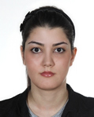
MARYAM SALEHI
I am a graduate student in Materials Science and Engineering Department at Rutgers University. I have started working in Prof. Chhowalla’s group since Feb 2012.
Alumni
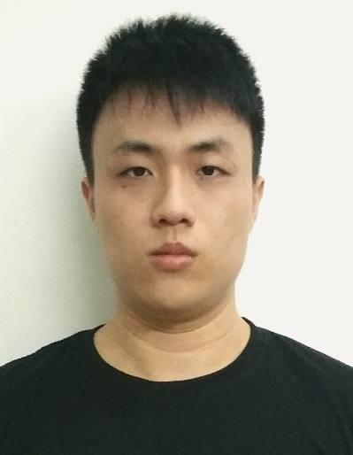
Tan Choon Zhe
FYP student from Aug 2016 - May 2017
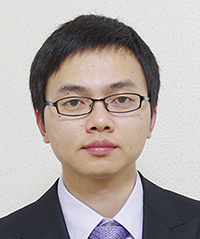
SHISHENG LI
Postdoc during June 2014 - Mar 2017
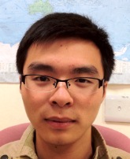
SHUNFENG WANG
Ph.D student during Aug 2012 - Nov 2016
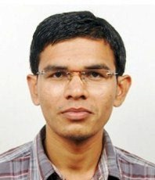
KIRAN KUMAR AMARA
Ph.D student during Jan 2012 - Mar 2016

LEIQIANG CHU
Ph.D student and postdoc during 2011 - 2016

FAN WENJIE
FYP student during Aug 2015 - May 2016
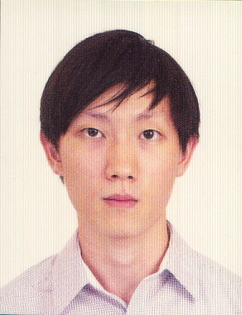
JUSTIN ZHOU YONG
FYP student during Aug 2015 - May 2016

SAMUEL BERNADI HARTANOEH
FYP student during Aug 2015 - May 2016

SENG LENG KIAT
FYP student during Aug 2015 - May 2016
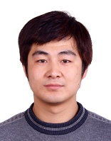
WEIJIE ZHAO
Postdoc during Feb 2012 - Feb 2016
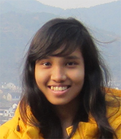
LEE YI WAN YVONNE
FYP student during Aug 2014 - May 2015

HO YEN KUANG KENNISON
FYP student during Aug 2014 - May 2015
NURUL HANNA BTE ALI KHAN
FYP student during Aug 2014 - May 2015
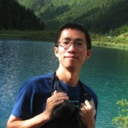
HUILONG XU
Postdoc during Sep 2014 - May 2015
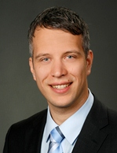
HENNRIK SCHMIDT
Postdoc during Jan 2013 - Mar 2015
XIUYUAN SHAO
Master student from Jan 2014 - Dec 2014

ZIMEI CHEN
Master Student from Nov 2012 - Dec 2014
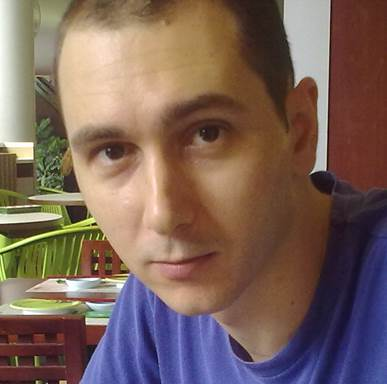
FRANCESCO GIUSTINIANO
Postdoc during Jun 2014 - Nov 2014
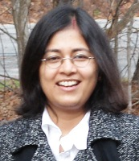
JAYEETA LAHIRI
Postdoc during Nov 2012 - Oct 2013.
Assistant Professor at University of Hyderabad, India.
https://sites.google.com/site/jayeetalahiri/

STANLEY DELUN SHI
FYP student during Aug 2012 - May 2013.
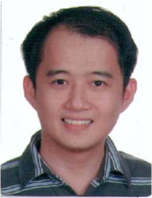
MINGLIN TOH
Postdoc during Apr 2013 - Oct 2013.
JING REN PANG
FYP student during Aug 2012 - May 2013

SWEE FONG WONG
FYP student during Aug 2012 - May 2013.
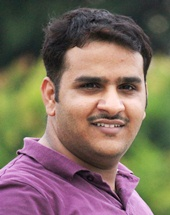
AJAY SONI
Postdoc during Dec 2011 - May 2013.
Assistant Professor at IIT Mandi, India.
http://faculty.iitmandi.ac.in/~ajay/
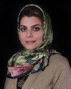
ZOHREH GHORANNEVIS
Postdoc during Dec 2011 - Feb 2013.
Assistant Professor at Polytechnic University in Iran.